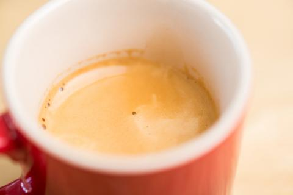
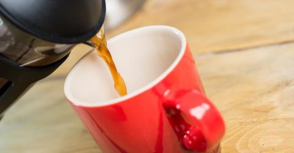
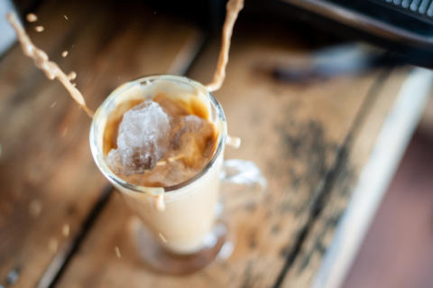

COFFEE SUBSCRIPTION
Coffee Subscription & How it Works
Our coffee subscription service is here to make sure you never run out of your favourite coffee again; you can subscribe to have coffee sent whenever you would like it – weekly, fortnightly or monthly.
Having an online subscription with us allows you to be able to choose everything about the coffee you’re ordering, resulting in the best experience possible. It also means that you don’t have to worry about remembering to buy coffee each month. All you have to do is wait for your subscription to fall onto your doormat.
Setting Up
Setting up an online coffee subscription couldn’t be easier. It takes just seven clicks to add coffee to your cart. Just choose the coffee, size of bag you would like and how frequently you require your coffee hit, weekly, fortnightly or monthly. Next, input your payment details just once, and your payments will leave automatically when your coffee is ready to be sent. From there we’ll do the rest. We’ll even tell you when your coffee is on its way. Get ready to pounce on the postman.
Account Management
Managing your account is a piece of cake too. If you are lucky enough to be going away on holiday and you are worried about your order arriving when you aren’t there, you can pause your subscription until you get home where you can start it again. If you do start a subscription with us, you won’t be in a ‘fixed’ contract. You can leave whenever you want to, and your subscription will stop immediately.
As all of our coffees are seasonal. Every so often we will have to change them when we run out. This is why our coffee subscriptions are for a brewing method and not for a particular coffee. For example, you may choose a coffee subscription that’s great for making espresso coffees, so when that coffee becomes unavailable, we’ll send you the next coffee that we’ve sourced for its great taste and compatibility with your chosen brew method. Don’t worry; we will always send you something yummy to enjoy that is similar. If you; don’t like it, you only have to let us know, and we will swap it for something else.
On the bright side, just think of all the different speciality coffee you will be able to try.
All our coffees are freshly hand roasted from our on-site roastery. Just before we pack your coffee to be sent to you, we grind it exactly how you tell us to. If you look closely on the back of your coffee bag, you’ll see when your coffee was roasted and who by too.
Not ready to dive in just yet?
No problem. Buying coffee without tasting it can be tricky. Check out our smaller, taster bags. These 50g bags give you the opportunity to try as many coffees as you like, before deciding upon the coffee subscription for you. 50g is an ideal amount to be able to make a couple of cups and get those taste buds tingling. Available in whole bean or in the grind size of your choice.
How often should I have my coffee sent?
Don’t order too much at once. Coffee loses its freshness and aroma after a while, so although buying it in bulk may seem like a good idea to begin with, you may find yourself stuck with ‘stale’ coffee. We would recommend ordering coffee from us in smaller quantities instead. This way your coffee will always be at its freshest.
For all our products we offer free delivery, so you don’t need to worry about spending your money on any delivery costs or topping up to a minimum order quantity because we have neither! To make sure that your freshly roasted coffee subscription arrives with you as soon as possible, we only use Royal Mail 1st Class Post to deliver. If that’s not exciting enough, as mentioned, first class postage is free on all orders.
Still Undecided On Which Coffee Subscription?
We offer a mystery subscription coffee too. A superb way of trying loads of different coffees from different countries and regions. What isn’t to love? A different bag of freshly roasted coffee delivered as often as you like. At any given time, we have a range of six single origin coffees along with an ever-changing, limited edition blend. Just choose your frequency, grind and weight, and we will do the rest.

I’ve just received my coffee, how do I keep it fresh?
So, you are a new subscriber, and you’ve just received your first bag of coffee. Welcome to the troop. “How do I keep my coffee fresh until I get my next delivery?” I hear you ask? Well get comfy, and I’ll give you some great pointers for keeping your coffee in excellent condition.
Keep your coffee somewhere cool that isn’t in direct sunlight. However, you don’t want to put your coffee in the fridge as this can affect the flavours and freshness of your coffee.
Don’t leave your coffee bag open as oxygen and coffee don’t mix which is a shame as I’m sure they would make a great couple. The oxygen will take away the taste, freshness and smell of the coffee, rather than adding to it. Keep your coffee in an airtight bag preferably the one it came in. If not, a sealed bag or a (two chimps coffee tin) will be perfectly fine too. If you want to find out more about how to keep your coffee fresh, check out our blog “How To Keep Your Coffee Fresh.”
Let do this!
Are you ready for fresh coffee delivered to your door? Take our coffee quiz to help you get the exact coffee you want on your doorstep. You can tell us if you want your coffee ground for any device you have or if you want us to send it as a whole coffee bean pack. When you take our quiz, you’ll be asked; what time of day do you drink your coffee, how you like to make your coffee, e.g. through a cafetiere, if you would like it ground for your chosen device and how often you drink coffee.
After you have finished the quiz, just let our wizard work its magic to find the best-suited coffee for you.
If you take our quiz and you’re not happy with the coffee we have chosen for you, don’t worry! Just scroll down when you have finished to see a full list of all the coffees available.
Take our quiz here.